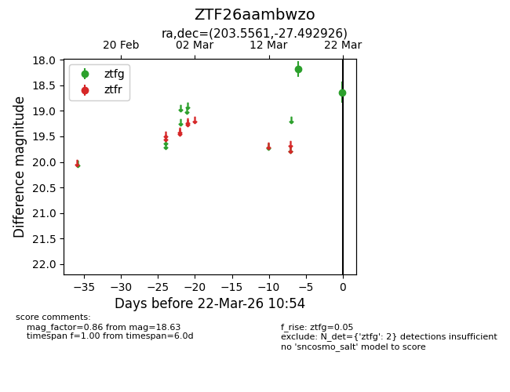
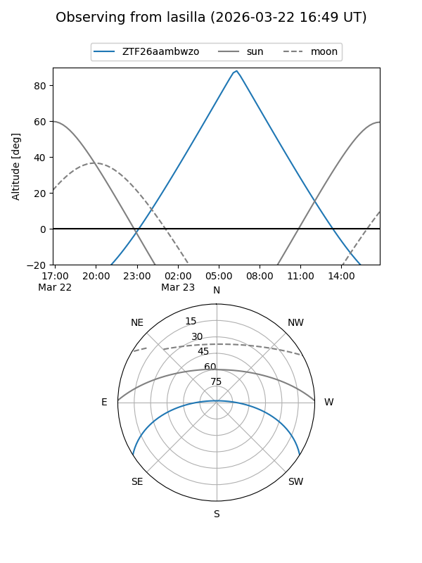
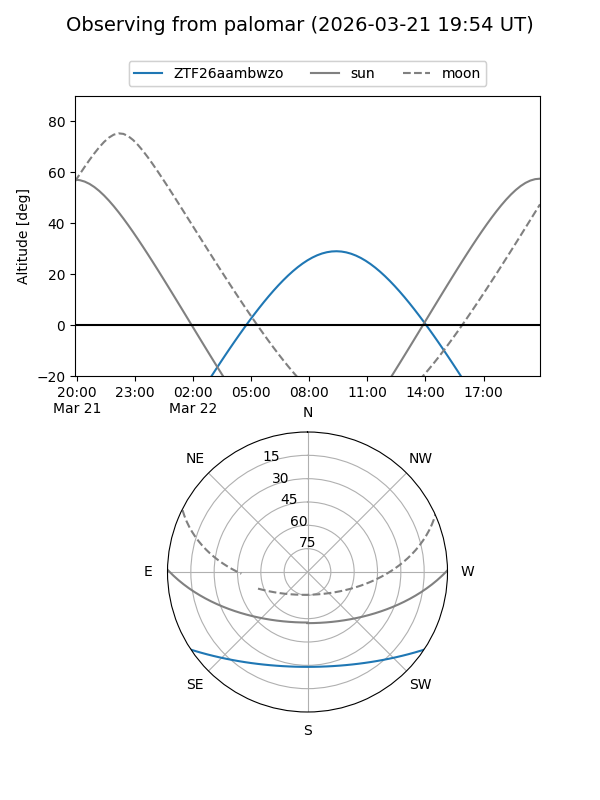

ZTF26aambwzo
Target ZTF26aambwzo at 2026-03-22 10:56
Aliases and brokers:
FINK: link
Lasair: link
ALeRCE: link
alt names
ZTF26aambwzo (ztf,fink_ztf)
Coordinates:
equatorial (ra, dec) = 203.5561,-27.49293
equatorial (HMS+DMS) = 13:34:13.45,-27:29:34.53
galactic (l, b) = (314.4451,+34.42047)
Flags:
Photometry:
last ztfg=18.63
2 ztfg detections
Lightcurve

Visibility


Additional plots